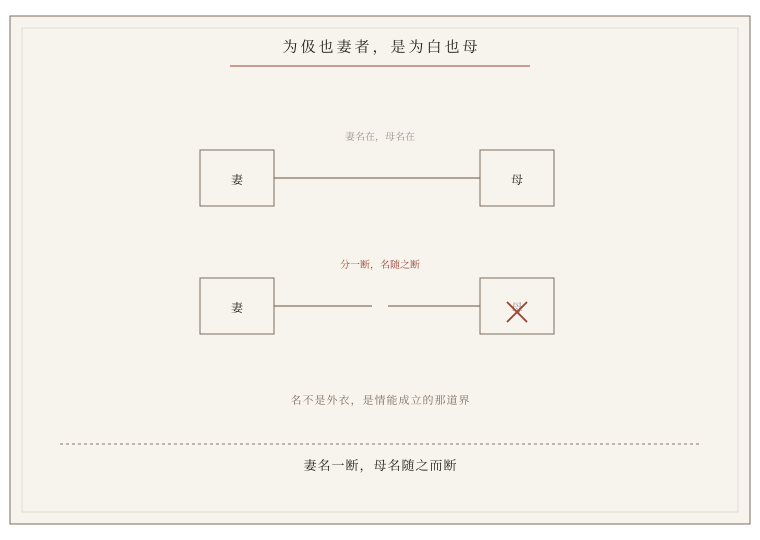

檀弓上 · 三·四 · 第 207 课
子上之母死而不丧。门人问子思：先君子尝丧出母乎？曰「然」。又问：何不使白丧之？子思曰「为伋也妻者，是为白也母；不为伋也妻者，是不为白也母」。注「礼，为出母期；父卒，为父后者不服耳」「记礼所由废，非之」。
说什么事：母亲被出，死了，儿子不为她服丧。
落在哪一层：礼，兼及礼制之变与礼意。论名分与情感之分离。
为何编在此位：上节言人子之许与不许，此节言一礼之废，正当子思之手。檀弓上自此事起，转入丧礼诸辨。
【经】子上之母死而不喪。門人問諸子思曰：「昔者子之先君子喪出母乎？」曰：「然。」「子之不使白也喪之，何也？」子思曰：「昔者吾先君子無所失道，道隆則從而隆，道污則從而污。伋則安能？為伋也妻者，是為白也母；不為伋也妻者，是不為白也母。」故孔氏之不喪出母，自子思始也。
【注】子上，孔子曾孫，子思伋之子，名白，其母出。禮，為出母期；父卒，為父後者不服耳。污猶殺也，有隆有殺，進退如禮。伋則安能，自予不能及。記禮所由廢，非之。
【疏】此一节论子上不丧出母之事。注「礼为至服耳」：案《丧服》齐衰杖期章「出妻之子为母」，又云「出妻之子为父后者，则为出母无服」，传云「与尊者为一体，不敢服其私亲」是也；子思既在，子上当为出母有服，故门人疑而问之。云「子之先君子」谓孔子也；子思曰「然」，然犹如是，言是丧出母故也；伯鱼之母被出，死，期而犹哭，是丧出母也。「道犹礼也」，言吾之先君子无所失道，道有可隆则从而隆，谓父在，为出母宜加隆厚，为之著服；「道污」者，污犹杀也，若礼可杀则从而杀，谓父卒，子为父后，上继至尊，不敢私为出母礼，当减杀则不为之著服。「伋则安能」者，子思自以才能浅薄，不及圣祖，故云伋则何能；郑云「自予不能及」，予犹许也，自许不能及也。
出母 被夫所出之母。子于出母，礼有服。
不丧 不为服丧。
期 齐衰杖期，一年之服。
为父后 父卒而承其宗祧者。为父后者于出母无服。
隆 污 隆谓加厚，污犹杀，谓减削。注「有隆有杀，进退如礼」。
安能 何能。注「自予不能及」。
子上（名白）之母被出而死，白不为她服丧。门人问子思：「从前你的先君（孔子）为出母服过丧吗？」子思说：「服过。」又问：「那你为何不让白服？」子思说：「从前我先君于道无所失：道可加厚，就随它加厚；道当减削，就随它减削。我伋怎么能及？凡做过我伋之妻的，就是白的母亲；凡不曾做我伋之妻的，就不是白的母亲。」所以孔氏之不为出母服丧，自子思始。
此节三层：一、礼本有为出母期之服，且孔子（伯鱼之父）实行之；二、子思引「道隆道污」自解，谓礼当随位而降；三、一句「为伋也妻者是为白也母」，把母子之名挂在夫妻之名上——妻名既绝，母名随之而绝。末句「故孔氏之不丧出母，自子思始也」，郑注「记礼所由废，非之」：记者不是赞，是记下一个礼从此废了。
第一层 礼本有服 《丧服》齐衰杖期章明列「出妻之子为母」；唯「为父后者」则无服，传曰「与尊者为一体，不敢服其私亲」。可见不为出母服，本是一例外，且限于承宗者。此节先把这个前提立住，后文之变才看得清。
第二层 道隆道污 子思所说「道」，疏训为礼。父在，子未为父后，为出母可以加隆而著服；父卒而子为父后，上继至尊，不敢私为其母，礼当减杀。同一人、同一母，服与不服，看的是他此刻站在哪个位置。这是古礼最硬的一条：礼随位变，不随情变。
第三层 名由分定 「为伋也妻者，是为白也母」。此语是全节锋刃：它不问白爱不爱其母，只问那女人是不是伋之妻。是，则母名成立；不是，则母名不存。名分不是感情的外衣，是感情成立的条件。疏引伯鱼之母被出、期而犹哭，以证孔子尝丧出母——同一家门，两代两法，正见子思所谓「伋则安能」。
第四层 记者之「非之」 末句是史笔。郑注「记礼所由废，非之」，明言记者不以此举为是。古之记礼者，于变礼之处必书其始，且书其非。这一笔，比任何议论都重。
与今日何干 名分与情感分开之后，人常以为可以只要情感。此节说的是另一面：有些情感，本就靠名分撑着；名分一断，礼便无处安放。今人离婚再组，最难的往往不是情，是称谓与礼数如何重新落位。
| 左 | 右 |
|---|---|
| 子上之母死而不丧 | 其母出 |
| 先君子丧出母乎 | 曰然 |
| 道隆则从而隆 | 父在，可加隆著服 |
| 道污则从而污 | 父卒为父后，礼当减杀 |
| 为伋也妻者是为白也母 | 名由分定 |
| 不为伋也妻者是不为白也母 | 分绝则名不存 |
| 孔氏不丧出母自子思始 | 记礼所由废，非之 |
画一间家庙之外的廊下。画面中央立一位中年士人（素服、束发、侧身向内），面前稍远处跪坐着一名少年（衣色略浅，双手置于膝上，头低垂），二人之间空出一段明显的地面，示「不为服」的距离。廊柱一侧挂着一幅未展开的素帛（卷起、未系），示「礼有服而未著」。廊外远处有雨后的湿痕，暗示新丧。画面右侧近柱处置一只空着的食器（有盖未开）。不写文字、不画第二人以外的人物。赭色只用在少年膝前那一小块地面与素帛的系带处。
